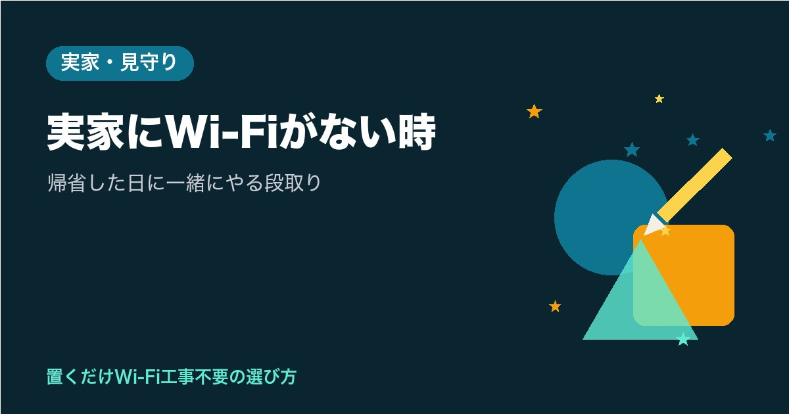

実家にWi-Fiがない時｜帰省した日に一緒にやる段取り
※この記事はプロモーション（広告）を含みます

次の帰省の日にご実家へWi-Fiを入れられたら、お母さまの顔を見ながら話せる日がぐっと近づきますよね？
実家にWi-Fiがない時は、「帰省の前にあなたが調べること」「帰省した日に一緒にやること」「帰る前に残しておくこと」の3つに分けて段取りすると、お母さまが一人で設定する場面をなくせます。
この記事では、工事のいらない置くだけWi-Fi（ホームルーター）のSoftBank Airを例に、帰省1回で使えるところまで進める順番と、持ち物、受け取りから8日のあいだに確かめたいことを紹介します。
確認日：2026年11月4日（料金・条件は公式ページと重要事項説明書で確認。変わることがあります）
実家にWi-Fiがない時｜まず「受け取り方」を2つから選ぶ
段取りは、Airターミナル（SoftBank Airの機械）をどこで受け取るかで変わります。公式の「ご利用までの流れ」をもとに、2つの進め方を並べました。
| 進め方 | 受け取りまでの目安（公式の記載） | 帰省した日にやること | 合いやすい場面 |
|---|---|---|---|
| A. 帰省した日に、お母さまとショップで申し込む | 最短当日に受け取り（在庫による） | 申し込み・受け取り・設置まで | 帰省が1泊以上で、近くにショップがある |
| B. 先にWeb・電話で申し込み、実家に届けてもらう | 支払い方法の登録が終わってから最短2日程度（土日を挟むと延びる） | 届いた箱を一緒に開けて設置する | 日帰りの帰省で、時間を設置に使いたい |
Aの良さは、お母さまがお店の人と直接話せることです。名義や支払いの説明を、あなたと並んでその場で聞けます。在庫は日によって変わるので、行く前にお店へ問い合わせておくと空振りを防げます。
Bの良さは、帰省の日の時間をほとんど設置と練習に使えることです。ただ、Webや電話の申し込みでは、郵送かSMSで届く「登録手続きの案内」に沿って、本人確認書類と支払い方法を登録する流れがあります。登録するのは契約するお母さまの情報なので、電話でお母さまと話しながら、ゆっくり進める形になります。申し込みから90日以内に登録が終わらないと取り消しになる、という決まりもあります。
どちらの進め方でも、契約するのはお母さま本人です。SoftBank Airは重要事項説明書で、設置場所の住所を契約者の自宅住所と決めているためです。あなたは横で手伝う役、と考えると分かりやすくなります。名義の考え方は実家のWi-Fiおすすめでくわしく紹介しています。
帰省の前に、あなたが調べておくこと
帰省の日を軽くするために、あなたの家からできる下調べがあります。
- 提供エリアを確かめる：公式の「提供エリアの確認」ページで、ご実家の住所を入れて調べられます
- 住所ごとの速度情報を見る：公式の「速度情報」ページで、住所ごとの最大速度の目安が分かります。速度はベストエフォート（最大値で、保証ではない速度）なので、あくまで目安として見ておきます
- お金の話を1枚にまとめる：お母さまにとって大事なのは、毎月いくらかがはっきりしていることです。下の表を印刷して持っていくと、帰省の日に一緒に見ながら決められます
- （Bの場合）届く日を帰省の日に寄せる：受け取った8日後から料金がかかり始めるので、届いた箱を長く置いたままにしない段取りにしておきます
| 項目 | 公式の記載（税込） |
|---|---|
| 基本料金 | 月5,368円。2026年12月利用分（2027年1月請求分）から月5,698円（11月以前に契約した人も対象） |
| 契約事務手数料 | 4,950円（初月。条件によって1,100円の割引あり） |
| 端末（Airターミナル6） | 95,040円。48回払いなら月1,980円で、2か月目〜49か月目は月月割で基本料金から月1,980円割引 |
| 60歳以上向けの割引 | 契約者が満60歳以上なら、課金開始月から24か月目まで月2,090円割引。12月の改定後は割引後 月3,608円（条件あり） |
| 契約期間・解除料 | なし（解約すると月月割は終わり、端末代の残りは払い続ける） |
少し前に出回っていた「月4,950円」は、2026年8月31日までの申し込みに限った特例で、今の申し込みには当てはまりません。BBユニバーサルサービス料も別にかかります。
60歳以上向けの割引は、Airターミナル6の購入や指定の窓口での新規申し込みなどが条件で、年齢は申し込む時の契約者名義の人で判定されます。お母さまの名義で契約するなら、お母さまの年齢で見ることになります。条件の全体はWi-Fiのシニア割にまとめています。
帰省の日の持ち物｜お母さまに用意してもらうもの
当日あわてないよう、前の週の電話で、お母さまに用意してもらうものを伝えておきます。
| 誰が | 用意するもの | ひとこと |
|---|---|---|
| お母さま | 本人確認書類（お母さまのもの） | 使える書類の種類は、申し込み先で先に確かめておく |
| お母さま | 支払い方法（登録するもの） | 誰の支払い方法を使えるかも、申し込み先で確かめておく |
| お母さま | ふだん使っているスマホ（充電しておく） | Wi-Fiの設定と、LINEのビデオ通話の練習に使う |
| あなた | 料金の表を印刷した紙 | 一緒に見ながら、お母さまに決めてもらう |
| あなた | 大きな字のメモ用紙とペン、マスキングテープ | ランプの名前と「困ったときのメモ」を貼る |
| あなた | 必要なら延長コード | 窓際にコンセントが届かない時に |
「書類って、どれを出せばいいの？」と、お母さまに聞かれることもあると思います。あなたが申し込み先で使える書類を先に確かめておき、電話で「〇〇があるか、引き出しを見ておいてね」と一つずつ伝えると、お母さまも準備しやすくなります。
帰省した日の段取り｜着いてから帰るまでの順番
当日は、次の順番で進めると、お母さまが覚えることは少なくて済みます。
- 料金の表を一緒に見る：決めるのはお母さまです。あなたは「毎月いくら」「12月から上がる」「やめる時の解除料はないけれど、端末代の残りはある」を、表を指でさしながら伝えます
- （Aの場合）一緒にショップへ行く：申し込みと受け取りまで。お母さまの本人確認書類と支払い方法を持って出かけます
- 置き場所を決める：公式のよくある質問では、窓際で床から30cm〜80cmくらいの高さが適していると案内されています。直射日光が当たる所、棚の中、水槽の近くは避けます。お母さまがふだん過ごす部屋の近くから探すと、使う場所にも電波が届きやすくなります
- 電源をさして、ランプを見る：公式の流れでは、ランプが5つとも緑になれば配線完了です。Airターミナル6では、5G/4Gのランプの青は5Gでつながっている時の色で、これも正常です
- 同梱のQRコードを、お母さまのスマホで読む：Wi-Fiの設定はここで1回だけ。お母さまの指で読んでもらうと、「自分でつないだ」という手ごたえが残ります
- 使いたいことを、その場で1つ試す：LINEのビデオ通話なら、あなたが別の部屋に行ってかけ合ってみます。手順はテレビ電話と高齢者のWi-Fiで紹介しています
- 調子のよいときのランプを写真に撮る：あなたのスマホに残しておくと、あとで電話で「この写真と同じ？」と比べられます
置き場所の考え方はソフトバンクエアーの置き場所もあわせてどうぞ。窓際にコンセントが届かない時は、延長コードがあると選べる場所が広がります。
帰る前に残しておくこと｜受け取りから8日のあいだ
「あなたが帰ったあとに止まったら、電話で何を聞けばいいの？」という心配は、帰る前の少しの準備で軽くできます。
- ランプの横に名前を貼る：「でんげん」「つながり」「でんぱ」のように、お母さまに分かる言葉で。電話で「でんぱは何色？」と聞けるようになります
- 「困ったときのメモ」を箱の近くに貼る：「1. ランプの色を見る 2. コンセントを抜いて、少し待って、差す 3. しばらく待つ 4. 〇〇（あなた）に電話」と大きな字で
- 契約の書類の置き場所を決める：相談の電話をする時、手元にあると話が早く進みます
もう一つ、受け取ってからの8日間には、公式の決まりが重なっています。
| いつ | 公式の決まり |
|---|---|
| 受け取りから8日以内 | 接続できない時は連絡する（ご利用までの流れ） |
| 受け取った8日後 | 料金がかかり始める（課金開始日。月の途中なら初月は日割り） |
| 契約書面の受領日か契約成立日の、遅いほうから8日以内 | 初期契約解除ができる（契約事務手数料などはかかる。Airターミナルは返却） |
帰省から戻ったら、この8日のうちに1回、電話かビデオ通話で「ランプ、緑のまま？」「動画は止まらずに見られた？」と聞いてみてください。うまくいかない時に、決まりの期間の中で相談できます。初期契約解除のくわしい流れはホームルーターのクーリングオフにまとめています。止まった時にランプの色で見分ける方法はソフトバンクエアーの繋がらない時が役に立ちます。
向かない人・注意点
帰省1回で進める段取りは便利ですが、次のような場合は先に知っておくと安心です。
- 届く日と帰省の日を合わせにくい：受け取った8日後から料金がかかり、Web・電話の申し込みでは発送から30日以内に受け取らないと取り消しになります。帰省の予定がはっきりしない時は、帰省の日にショップで申し込む形のほうが合いやすくなります
- 電波の入りにくい家：提供エリアの中でも、速さは家の造りや置き場所で変わります。利用が集中する時間帯には速度が制限されることがある、と重要事項説明書に書かれています。速度情報で目安が低い時は、光回線などほかの方法も含めて考えてください
- 契約住所以外では使えない：試しにあなたの家へ持ち帰る、入院先の病院へ持っていく、といった使い方はできません
- 早めにやめる可能性がある：契約期間や解除料はありません。一方で、端末を分割で買った場合は、解約すると月月割が終わり、端末代の残りを払い続けます。「48か月使い続けると実質0円」という考え方なので、長く使うかどうかも一緒に話しておくと安心です
このサイトは、個人が運営する非公式の比較サイトです。契約の判断は、公式ページと重要事項説明書で確かめたうえで、お母さまと一緒に行ってください。
確かめた公式の情報
- SoftBank Air ご利用までの流れ
- SoftBank Air 提供エリアの確認
- SoftBank Air 住所別の速度情報
- SoftBank Air 料金
- ソフトバンク 料金改定のお知らせ
- U-25／O-60向け SoftBank Air スマートライフ割
- SoftBank よくあるご質問：Airターミナルのランプが正常に点灯しない場合の対応方法
- SoftBank Air 重要事項説明書（2026.07.15 版）
まとめ
- 受け取り方は2つ。帰省した日にショップで申し込む（最短当日、在庫による）か、先にWeb・電話で申し込んで実家に届けてもらう（登録後に最短2日程度）か
- 契約するのはお母さま本人。本人確認書類と支払い方法もお母さまのものを、前の週の電話で用意してもらう
- 帰省の前に、エリアと速度情報、料金の表（12月から月5,698円）をあなたが下調べしておく
- 帰る前に、ランプの写真・名前の貼り紙・「困ったときのメモ」を残し、受け取りから8日のうちに1回様子を聞く
お母さまの毎日を思って、帰省の1日を段取りから考えるあなたに、ここまで読んでくださってありがとうございます。
まずは今夜、公式の「提供エリアの確認」ページに、ご実家の住所を入れてみませんか。その1回で、次の帰省の進め方がぐっと決めやすくなります。
次の帰省の日、お母さまと最初に試してみたいのは、どんなことでしょうか？
最後まで読んでくださり、ありがとうございました。
まずは公式のエリア確認に、ご実家の住所を入れてみませんか。1分ほどで、置くだけWi-Fiが使える場所かが分かります。
お母さまと、まず何をしたいですか？ビデオ通話、見守り、テレビで動画。いちばんを1つ決めると、選ぶ1台が見えてきます。
この記事は下書きにAIを使い、内容は運営者が公式情報で確認しています。画像はAIで作成したイメージです。